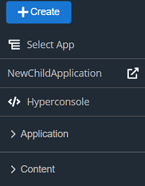
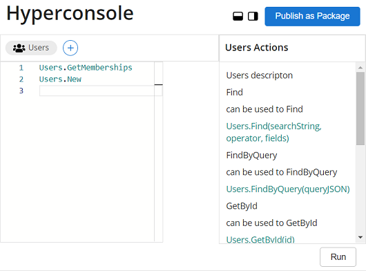

Create Application Using Hyperconsole
Introduction
This article explains how you can create an application using the Hyperconsole. Hyperconsole is a commandline like rich editor where you can specify instructions to create your required application. You can include resources from Content Store and can call functions for specific actions.
Pre-Reqs
- User must be logged in.
- User must have necessary permissions.
Step-by-Step Instructions
From the Dashboard, navigate to;
Left Nav Barand click theHyperconsolebutton. Refer to the screen shown below.
The Hyperconsole editor looks like the screen shown below.
